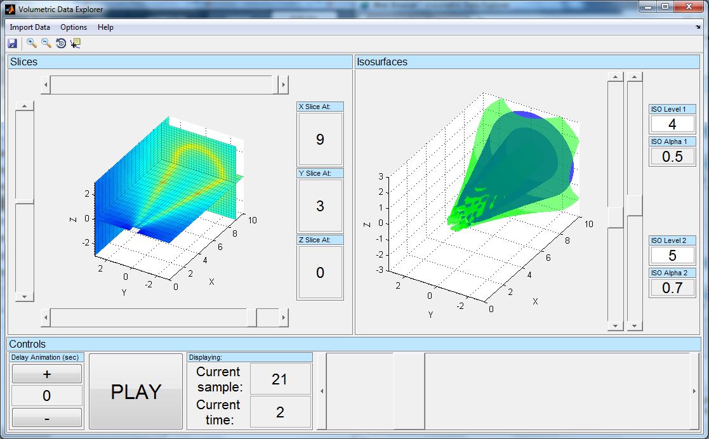
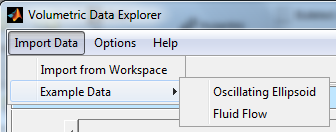
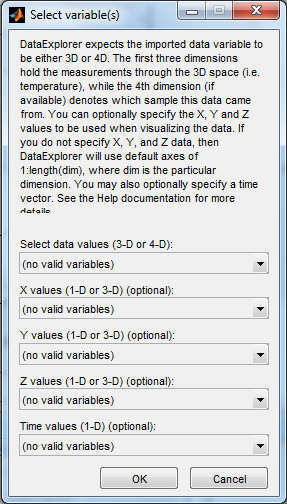
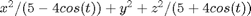
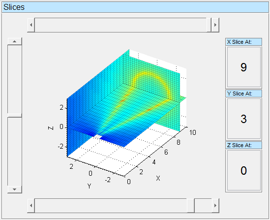
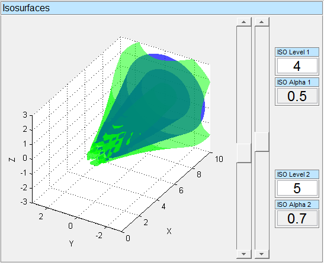
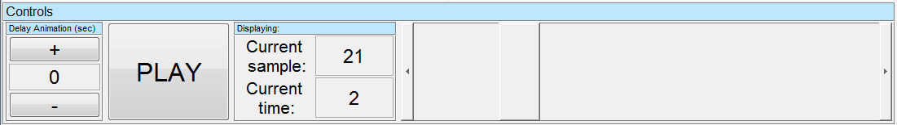
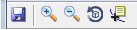
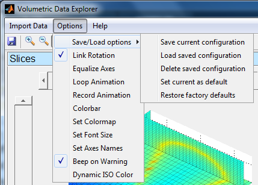

Volumetric Data Explorer
This app provides an interactive environment to explore higher dimensional data using some of MATLAB's abilities for volumetric visualization and animation. It was originally designed for data that was measured in a 3D grid of data points, for example temperature or wind speed taken at each point in a 3D space. If this data is taken over time, it can also be animated. However any data that fits the form v = f(x,y,z) or v = f(x,y,z,t) can be used.
Adam Filion Copyright 2013, The MathWorks, Inc.

Contents
Importing Data
This app allows you to import custom data from your workspace, or use sample data sets to try out the visualization capabilities.

Importing From Workspace
DataExplorer works on 4D and 5D data, contained in variables that are either 3D or 4D respectively. The first three dimensions hold the measurements through the 3D space (i.e. temperature), while the 4th dimension (if available) denotes which sample this data came from. For example, if we have a 3D array of measurement locations 15 wide by 10 high by 20 deep, and we take 30 samples over time, then we are working with 5D data as we have three spacial measurements, one measurement for i.e. temperature, and one for time. The data is then expected to be a matrix of measurement values of size 10x15x20x30, so Y-by-X-by-Z-by-t (4D variable). The order is due to the fact that indicies in MATLAB go by row first then column followed by higher dimensions, so the row (Y dimension) is first.
You can optionally specify the X, Y and Z values to be used with the axes when visualizing the data. You must specify all three, and they must either all be 1D vectors of appropriate size of points in monotonically increasing order, or all be 3D martricies of the values, such as what is returned by meshgrid. If you do not specify X, Y, and Z data, then DataExplorer will use default axes of 1:length(dim), where dim is the particular dimension. Assuming the selected data was of valid dimensions, the axes will be labeled according to the names of the variables selected from the workspace.
You may also optionally specify a time vector. If you do, this will display the time associated with each measurement sample during animation, and you can specify a new starting point by the time in addition to the sample number (see Animation section for more details).
All imported data must be of type double.

Example Data
Several sample data sets can be generated to use in DataExplorer.
Oscillating Ellipsoid
This option generates a 4D grid of points evaluated for the equation of an oscillating ellipsoid of the form:

Fluid Flow
This option generates data from a modified version of MATLAB's built-in flow command. The modified version accepts time as an additional input vector, which is used to vary parameters A and nu according to A = 2*sin(2*t)+4; and nu = cos(2*t)+1.5; to create a time varying data set. Enter doc flow and edit flow at the command prompt for more information.
Importing Using the Functional Syntax
You can also use DataExplorer's underlying class to import data and set up the app programatically for the data to be visualized, v, the dimensional values, x y and z, and the time vector, t. It can be used with the following syntax:
>> DataExplorer(v); Specify data only
>> DataExplorer(x,y,z,v); Specify dimensions and data
>> DataExplorer(x,y,z,v,t); Specify dimensions, data and time
>> DataExplorer([],[],[],v,t); Specify data and time, but not dimensions
Each one of these will generate a new DataExplorer window with the new data. The behavior is the same as if starting DataExplorer with no inputs using >> DataExplorer, and then loading in the data using the Import Data -> Import from Workspace menu.
Slices
The Slice panel of DataExplorer shows 3 different slices through data. A slice is created by holding one of x, y, or z constant at a certain value, and interpolating values along the resulting surface. You can adjust the slice position through the sliders or by entering values into the text boxes. Only slice locations that are inside the range of the data are valid and will be created. Slice locations can be changed outside of or during animation.
Note that a slightly modified version of the built-in slice command was used and is included in DataExplorer. Lines 40, 131-133 and 137 of slice were commented out to make reusing the axes during animation easier.

Isosurfaces
Most people are familiar with contour lines, which are lines on a 2D figure (i.e. a map) that show where constant values (i.e. elevation) exist. The 3D equivalent is called an isosurface, which is a surface in 3D space that follows a constant value.
The Isosurface panel shows two isosurfaces. By default the first is green and the second blue, but these can change when setting the Options -> Dynamic ISO Color menu option. You can set the ISO Level for the surface, which is the value it will follow, and the Alpha (transparency) property in the text boxes. The ISO Level can also be changed through the sliders. When you import a new data set from Workspace, DataExplorer will set initial ISO Levels to be 1/3 and 2/3 of the way between max and min values for the total data set. The Alpha value must be between zero and one. Setting the Alpha value outside of this range will disable that isosurface. Disabling one or both isosurfaces will speed up animation. These can be updated outside of or during animation.

Animation
The Controls panel lets you control the animation. If the input data is 3D instead of 4D, meaning there is no dimension to animate on, then the animation panel is disabled. Note that disabling one or both of the isosurfaces by setting their alpha value outside the range of 0-1 will speed up animation.

Delay panel
The Delay panel allows the user to specify a delay in seconds for MATLAB to wait before visualizing the next sample. This uses the pause command to slow the rate of animation. It can be changed either through the + or - buttons, or by entering a value in the text box. This value cannot be negative, and it can be modified outside of or during animation.
PLAY Button
Clicking the PLAY button will begin animation at the current sample, and change it to a STOP button. Clicking on STOP stops the animation. If the current sample is the final sample, clicking PLAY will restart the animation at the first sample. While the animation is active, the Display panel and Play Bar are disabled.
Display panel
The Display panel shows which sample (the index of the 4th dimension of data) is currently being visualized. If you selected a time vector when importing data, it will also show the corresponding time value. You can modify either the current sample or current time to display through their text boxes. The current sample must be a positive integer in the range of 1:length(data(1,1,1,:)). The current time must be a value contained in the time vector selected when importing. If it is not, it will be rounded to the nearest one. When the PLAY button is clicked, these options are disabled until the animation stops, but their values will update while animating.
Play Bar
The Play Bar allows you to interactively scroll through the different samples of data. The Display pane will update to show the current value when interacting with the Play Bar. The Play Bar is disabled during animation.
Toolbar
The toolbar contains a few utilites for exploring your data. These are the same as the ones in the standard figure window.

Options

Save/Load Options
Save current configuration: Save the current options configuration to a .mat file in the app's directory. Note that 'default' and 'factory' are reserved names for options configuration files. If the user attempts to save to them, the app will warn the user and will not save. It will save the following options and information:
- Link Rotation (on/off)
- Equalize Axes (on/off)
- Loop Animation (on/off)
- Record Animation (on/off)
- Name of file to record to
- Frame rate for recording
- Colorbar (on/off)
- Colormap to use, can save custom colormaps
- Font Size to use
- Beep on Warning (on/off)
- Dynamic ISO Color (on/off)
Note that it does NOT save the axes names, which is the only portion of the Options menu it does not save. This is so custom axes names will be used when importing different sets of data from the workspace.
Load saved configuration: Load previously saved options file. This will set all of the settings listed above for the currently loaded data.
Delete saved configuration: Delete a previously saved options file. Note that the default and factory preferences files cannot be deleted.
Set current as default: Set the current options to the default that is used when loading a set of data.
Restore factory defaults: Restore current and default options to the original version.
Link Rotation
Links the rotation of the two axes when using the rotate tool so you view them from the same angle. It is on by default.
Equalize Axes
Sets the aspect ratio so that the data units are the same in every direction.
Loop Animation
Enabling this option will cause the animation to loop back to the beginning when it reaches the last sample. This option is disabled if imported data cannot be animated.
Record Animation
Allows the animating figure to be recorded to an avi file in the current directory. Turning the option on will prompt the user to give a file name to record to, and also to specify the frame rate for recording in frames/sec. It will begin recording when animation starts, and stop recording when animation stops. The user can modify slices and isosurfaces while recording. If animation is started again while this option is on, it will override the existing file. To make a new recording in a new file, turn the option off then back on. Setting this option on will automatically disable any aritifical time delay set using the Delay Animation panel. This option is disabled if imported data cannot be animated.
Colorbars
Creates colorbars for both axes. The limits for the colorbar are set to be the min and max of the enitre data set. This is so the colorbar does not change at each time step, giving a better appreciation for how values are changing over time.
Set Colormap
Allows the user to change the colormap to another built-in colormap, specify a variable in the workspace that contains a custom colormap,or open the colormap editor to interactively build custom colormaps.
Set Font Size
Opens a dialog box where you can enter a new font size used in the edit boxes. This can make it easier to see large numbers or long decimals that may not fit in the text boxes with larger font sizes.
Set Axes Names
Opens a menu that allows the user to specify custom names for the axes. When importing data from the workspace, assuming valid X, Y and Z variables are selected, the axes names will automatically be set to the variable names from the workspace.
Beep on Warning
Toggles whether MATLAB will audibly beep when issuing app specific warnings regarding invalid data or settings. This is on by default.
Dynamic ISO Color
Turning this option on will color the isosurfaces according to the color in the app's colormap that maps to their value. This causes both the Slice and Isosurface panels to show the same color for the same value. Turning it off will set the colors to the default colors, green and blue. This option is off by default.
Acknowledgements
Several submissions from the MATLAB File Exchange were used in building DataExplorer:
The very helpful and powerful GUI Layout Toolbox by Ben Tordoff, without which this app never would have gotten finished: http://www.mathworks.com/matlabcentral/fileexchange/27758-gui-layout-toolbox
The uigetvariables command by Scott Hirsh, used for the dialog box for importing data from the workspace: http://www.mathworks.com/matlabcentral/fileexchange/37679-uigetvariables-dialog-to-pass-variables-from-workspace-into-gui
And the screencapture command by Yair Altman, used for capturing the figure for recording purposes: http://www.mathworks.com/matlabcentral/fileexchange/24323-ScreenCapture
Release Notes
V 1.6.1 (January 13, 2014)
- Fixed bug when importing 3D variable from workspace. Same bug that was fixed in V 1.5.1 for 4D variable.
V 1.6.0 (December 2, 2013)
- Added ability to open the standard figure colormap editor to allow easy building of custom colormaps. This option can be found in Options -> Set Colormap -> Open Colormap Editor.
- Disabled the Options menu until data is imported.
V 1.5.1 (September 5, 2013)
- Fixed error with R2013b, using the 'Enable' option for the underlying uiextras.HBox and uiextras.VBox from GUI Layout Toolbox is not longer available.
V 1.5.0 (July 1, 2013)
- Clarified in help doc the order of the dimensions of the data imported from workspace. The size/organization of the input matrix should be Y-by-X-by-Z-by-t, NOT X-by-Y-by-Z-by-t. This is because the order of dimensions in a MATLAB matrix is row-by-column-by-higherdimensions
- Modified the sliders to have continuous callbacks. They should now update while dragging, not only when released.
- Set figure's renderer to OpenGL manually in case the user's MATLAB doesn't do that automatically. This ensures transparency is available.
- Removed unnecessary warnings. User should no longer be warned about incorrect/missing variables when not selecting optional inputs, such as time.
V 1.4.0 (June 6, 2013)
- Added menu option Dynamic ISO Color, which will color isosurfaces according to the color their value maps to in the app's colormap.
- The Options -> Colorbars menu options will now create a colorbar for both axes.
- Sliders for the ISO Level values were added.
V 1.3.1 (May 29, 2013)
- Fixed bug in import behavior. Imported data now restricted to type double, which is the only data type supported by all of the built-in functions and options in the app.
V 1.3.0 (May 24,2013)
- Added ability to specify frame rate in recorded file
- Fixed Help menu option so it will bring up help doc on non-Windows systems
V 1.2.0 (May 6, 2013)
- Added options for saving/loading options configurations
- Reordered menu options
- Reenabled save button on toolbar for saving figure screenshots
- Several minor bug fixes
- Minor clarifications in help doc
- Added release notes in help doc
V 1.1.0 (May 5,2013)
- Uses new version of uigetvariables command from Scott Hirsch, allows for automatically naming axes according to imported workspace variable names
- Updated name of FEX submission to 'Volumetric Data Explorer' to give more accurate representation of app's capabilities
- Minor bug fix when setting menu options
V 1.0.1 (April 30,2013)
Bug fix when importing data from workspace
V 1.0.0 (April 29,2013)
Original Release, developed on R2013a